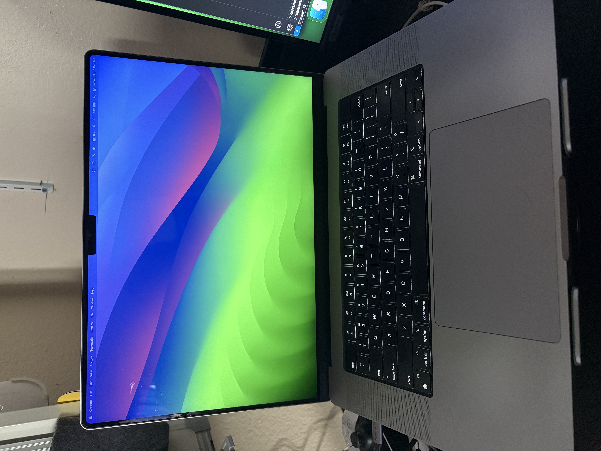

My Hardware
This website is running on my laptop. Here's a picture of the setup:
How I Exposed This to the Internet
To expose this site, I started a simple NodeJs web server on my laptop, which was only accessible locally. To make it public, I used a tool called ngrok. I ran the command ngrok http 8080, which created a secure public URL that tunnels traffic directly to my local server. This avoided any complex router or firewall configuration.